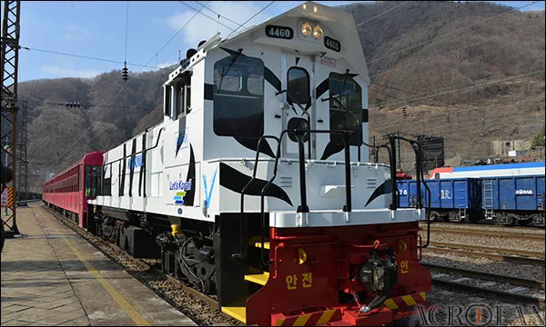
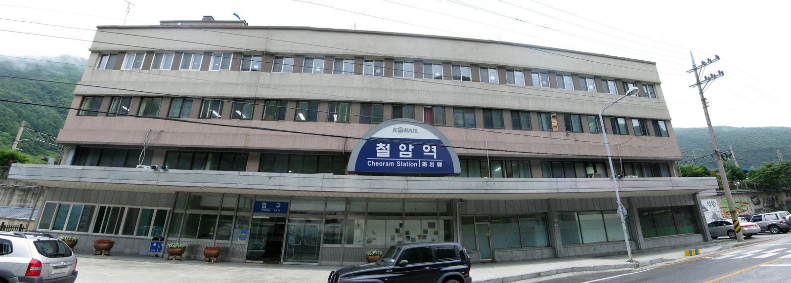
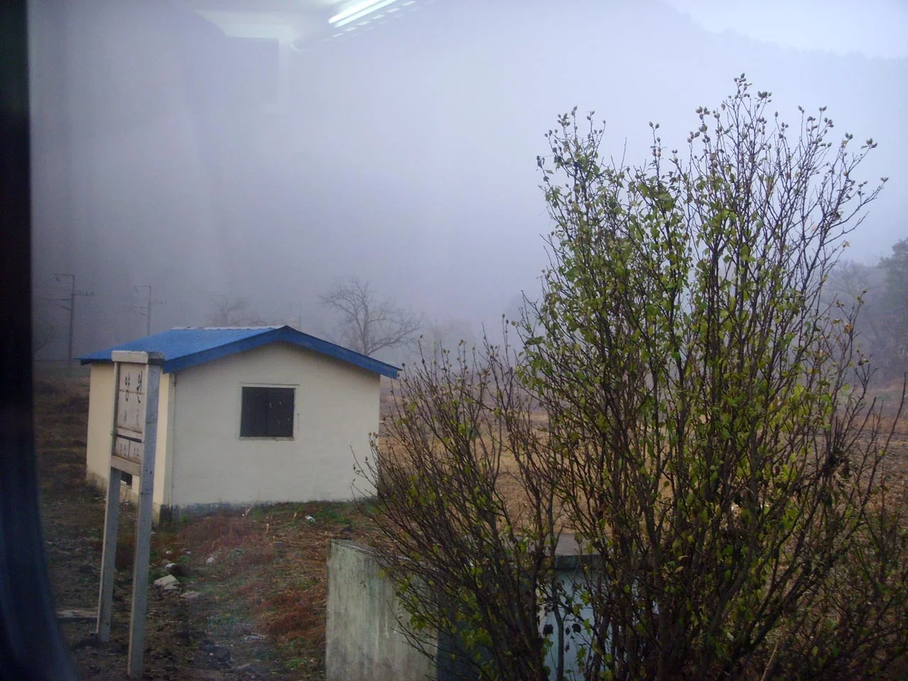
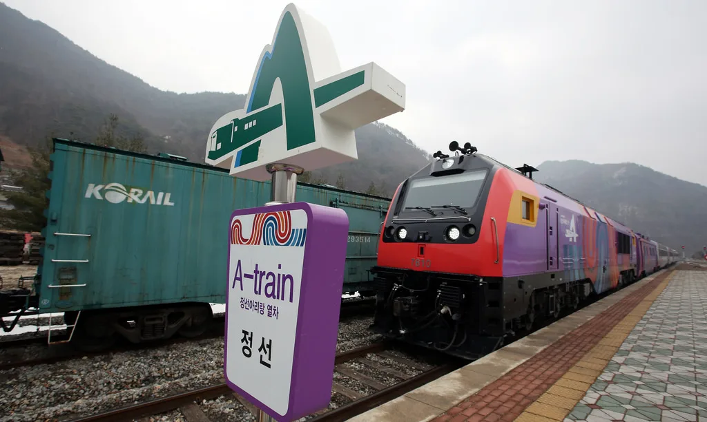

▲ 백두대간협곡열차(V-트레인)가 정차하는 분천역 일대. 영주~철암 구간 한가운데 있는 핵심 정차역이다 사진=Wikimedia Commons
1. 백두대간협곡열차(V-트레인), 어떤 열차인가
백두대간협곡열차(V-트레인)는 2013년 4월 코레일관광개발이 영동선에 투입한 국내 첫 관광열차다. 'V'는 계곡을 뜻하는 'Valley'의 첫 글자에서 따왔다. 영주~봉화~춘양~분천~양원~비동~승부~철암을 잇는 구간을 운행하며, 전 구간 거리는 약 87km다. 무궁화호 소화물차를 개조한 객차에 통유리를 넣고 백호 무늬를 두른 디젤 기관차가 이 객차를 끈다. 화려한 관광지 하나를 보여주는 열차라기보다는, 분천역부터 철암역까지 27.7km 구간을 시속 30km 안팎으로 서행하며 협곡과 계곡을 눈에 담게 하는 것이 이 열차의 핵심 포인트다.

▲ 백두대간협곡열차를 끄는 디젤 기관차. 흰 바탕에 검은 줄무늬를 두른 외관이 특징이다 사진=Wikimedia Commons (ACROFAN, CC BY-SA 3.0)
2. 시간표와 요금 — 예매 전 반드시 최종 확인할 것
백두대간협곡열차는 하루 왕복 기준으로 영주~철암 전 구간 1회, 분천~철암 구간 1회를 추가로 운행하는 방식으로 짜여 있다. 참고할 만한 대략적인 시각은 다음과 같지만, 계절·연도별로 시각과 요금이 바뀌어 왔기 때문에 실제 승차 시점의 정확한 시간표와 요금은 코레일 공식 홈페이지나 코레일톡 앱에서 반드시 다시 확인해야 한다.
| 열차 | 구간 | 참고 시각 |
|---|---|---|
| 하행 1 | 영주 → 철암 | 오전 8시 30분경 출발 → 11시 5분경 도착 |
| 단거리 왕복 | 철암 → 분천 | 11시 30분대 출발 → 낮 12시 30분경 도착 |
| 단거리 왕복 | 분천 → 철암 | 오후 2시 20분대 출발 → 3시 30분경 도착 |
| 상행 | 철암 → 영주 | 오후 3시 50분대 출발 → 5시 50분~6시경 도착 |
요금은 코레일톡 기준 분천~철암 구간 성인 편도 8,400원, 영주~철암 전 구간 성인 편도 11,700원이 최근 공지 기준으로 확인된다. 2023년 무렵에는 같은 구간이 각각 6,700원·9,400원으로 안내된 적이 있어, 그사이 운임이 오른 것으로 보인다. 다만 코레일이 '여행가는 달' 같은 시즌 프로모션으로 최대 50%까지 할인을 수시로 적용하기 때문에, 실제 결제 금액은 예매 시점의 코레일톡·코레일 홈페이지 화면에서 다시 확인하는 게 안전하다. 내일로 등 정기권으로는 별도 승차권 구매 없이 탑승할 수 없다는 점도 공통적으로 확인된다. 예매는 코레일 홈페이지, 코레일톡 앱, 역 창구·자동발매기에서 일반 승차권과 동일하게 진행하면 된다. 운행 요일은 목요일부터 월요일까지이며, 화·수요일은 운휴가 원칙이지만 이 역시 시즌별로 달라질 수 있어 예매 화면에서 날짜를 선택할 때 확인하는 편이 정확하다.
3. 좌석과 창문 — 이 열차를 타는 진짜 이유
객차는 총 3량으로 구성된다. 1호차와 3호차는 전망창을 갖추고 있으며, 좌석이 정면 방향과 창 방향으로 교차 배치돼 있어 어느 자리에 앉아도 창밖 풍경에서 완전히 소외되지 않는다. 2호차는 휠체어 이용객을 위한 배려 객차로, 출입구가 객차 중앙에 있고 전동휠체어 고정장치와 전용 안전벨트가 마련돼 있다. 좌석은 창을 따라 한 줄로 이어지는 자리와 두 사람이 나란히 앉는 자리로 나뉜다.

▲ 백두대간협곡열차의 종착역인 철암역. 협곡 서행 구간이 끝나는 지점이다 사진=Wikimedia Commons
이 열차의 진짜 특징은 창문을 직접 열 수 있다는 점이다. 천장을 제외한 대부분이 유리로 처리돼 시야를 넓혔고, 창 양쪽에 달린 손잡이 두 개를 동시에 잡고 원하는 위치에서 놓으면 개방 정도를 조절할 수 있다. 분천~철암 구간에서 서행할 때 창문을 열면 협곡의 공기와 계곡물 소리를 그대로 느낄 수 있어, 사진을 찍기에도 창가 자리가 가장 좋은 자리로 꼽힌다. 다만 객차 안에는 화장실과 전기 충전 콘센트가 없다. 승부역까지 정차 없이 10분 넘게 달리는 구간도 있어 탑승 전 미리 화장실을 다녀오는 편이 낫다.
4. 정차역 — 승부역이 특히 유명한 이유
서행 구간에 있는 정차역들은 각자 짧게 머물다 가는 정도지만, 그중에서도 승부역은 유독 이름값이 높다. 경북 봉화군 석포면에 있는 승부역은 주변에 마을 외에는 아무것도 없어 한때 이용객이 거의 없었고, 도로로는 접근할 수 없어 '대한민국에서 가장 오지에 있는 역'이라는 별칭이 붙었다. 1998년 말 시작된 환상선 눈꽃순환열차 덕에 '자동차로 갈 수 없는 오지역'으로 이름이 알려졌고, 이 인기에 힘입어 2004년 12월 10일 신호장에서 보통역으로 다시 승격됐다. 협곡열차는 승부역에서 약 10분간 정차하는데, 이 짧은 시간에 마을 주민들이 나와 감자·옥수수 같은 특산물을 팔기도 한다. 카드 결제가 안 되는 경우가 많으니 현금을 조금 챙겨가는 게 좋다.

▲ '자동차로 갈 수 없는 오지역'으로 불리는 승부역. 협곡열차가 약 10분간 정차한다 사진=Wikimedia Commons
양원역도 사정은 비슷하다. 정식 역사(驛舍) 없이 작은 승강장 형태로 운영되는 간이역으로, 이 역시 마을 주민들이 나와 좌판을 벌이는 짧은 정차 시간이 있다. 비동역은 협곡열차 서행 구간 중 가장 작은 역 가운데 하나로, 승강장만 덩그러니 있는 모습 자체가 볼거리다. 다만 이 역들은 정차 시간이 짧아 잠깐 둘러보는 정도이지, 등산이나 관람 코스로 삼을 만한 곳은 아니다. 봉화 청량산이나 철암 시가지처럼 정차역 인근에 볼거리가 있는 코스는 별도로 시간을 내 다녀오는 편이 낫다.

▲ 정식 역사 없이 승강장만 있는 양원역. 협곡열차 서행 구간의 간이역 중 하나다 사진=Wikimedia Commons
📍 탑승 전 챙길 것
· 창가 자리를 원한다면 예매 시 좌석 배치도를 미리 확인
· 승부역·양원역 간이 좌판은 현금 결제 위주
· 객차 내 화장실 없음 — 출발 전 미리 다녀올 것
· 협곡열차는 내일로 등 정기권 별도 승차권 필요, 일반 예매 채널(코레일 홈페이지·코레일톡)에서 구매
5. 다른 코레일 관광열차와 비교하면
백두대간협곡열차는 코레일이 운영하는 관광열차 중 하나일 뿐이다. 목적지나 원하는 분위기에 따라 다른 관광열차와 비교해보면 선택이 쉬워진다.
| 열차 | 주요 구간 | 특징 |
|---|---|---|
| 백두대간협곡열차(V-train) | 영주~봉화~분천~승부~철암 | 2013년 운행 개시, 개방형 창문으로 협곡을 서행하며 감상 |
| 정선아리랑열차(A-train) | 청량리~원주~민둥산~정선~아우라지 | 2015년 운행 개시, 전 좌석 와이드 통유리 전망창과 테마 객차 |
| 서해금빛열차(G-train) | 용산~수원~익산 등 서해안 구간 | 2015년 운행 개시, 온돌마루·족욕 시설을 갖춘 관광열차 |

▲ 강원 정선 구간을 운행하는 정선아리랑열차(A-train). 백두대간협곡열차처럼 코레일이 운영하는 관광열차다 사진=Wikimedia Commons (Korea.net, CC BY-SA 2.0)
협곡열차가 창문을 직접 열고 협곡의 공기를 느끼는 체험형 열차라면, 정선아리랑열차는 전 좌석 파노라마 창을 갖춘 안락한 관광열차에 가깝고, 서해금빛열차는 온돌마루 객차에서 서해안 노을을 감상하는 데 초점이 맞춰져 있다. 세 열차 모두 정기권(내일로 등)만으로는 탑승할 수 없고 별도 승차권을 구매해야 한다는 공통점이 있다.
6. 하루 코스로 정리하면
영주에서 출발해 철암까지 다녀오는 왕복이 기본 형태이지만, 시간이 부족하다면 분천~철암 구간만 왕복하는 짧은 코스도 있다. 어느 쪽이든 핵심은 분천을 지나면서부터 시작되는 서행 구간이다. 이 구간에서는 미리 창문을 열어두고, 승부역에서 잠깐 내려 간이역 특유의 정취를 느껴본 뒤 다시 철암까지 협곡을 눈에 담는 식으로 일정을 짜면 된다. 봉화 청량산 등산이나 철암의 옛 탄광촌 풍경을 함께 보고 싶다면, 협곡열차 탑승 전후로 반나절 정도 시간을 더 잡아두는 게 현실적이다.
▲ 분천역은 협곡열차의 실질적인 중간 기점이자, 서행 구간이 시작되는 지점이다 사진=Wikimedia Commons
✅ 출발 전 확인할 것
· 정확한 운행 시간표·요금은 코레일 공식 홈페이지·코레일톡에서 최종 확인
· 운행 요일은 원칙적으로 목~월, 화·수요일 운휴 — 예매 화면에서 날짜 선택 시 재확인
· 창문 개방은 양쪽 손잡이를 동시에 잡고 조작
· 승부역·양원역 정차 시간은 짧으니 미리 동선 계획을 세워둘 것